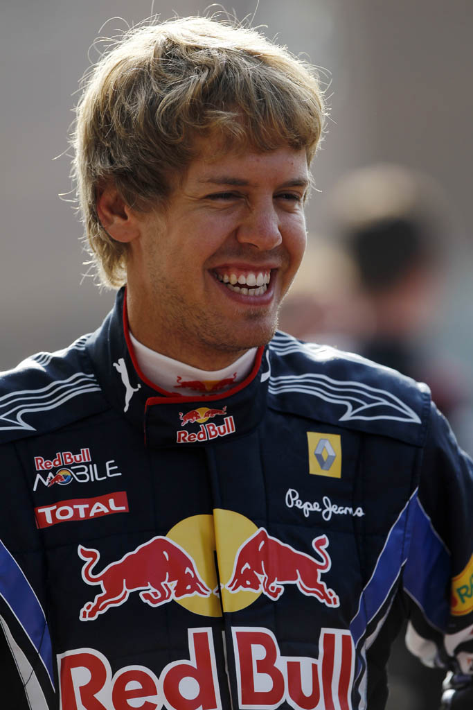

SINTESI DELLA STAGIONE 2010 - IL TRIONFO DI SEBASTIAN VETTEL
Era V8 Aspirati • 19 Gran Premi disputati

Red Bull RB6
2010 - Red Bull RacingTrascina per ruotare il modello - scroll o pinch per zoomare.
Il 2010 è considerata una delle annate più equilibrate e avvincenti di sempre. Con il divieto dei rifornimenti di carburante in gara e il debutto di Fernando Alonso in Ferrari, cinque piloti hanno lottato per il titolo fino alle battute finali. Sebastian Vettel, che non era mai stato in testa alla classifica durante tutta la stagione, ha conquistato la vetta proprio all'ultimo Gran Premio.
🏆 Campione del Mondo Piloti: Sebastian Vettel (Red Bull Racing) - 256 pt
🥈 Secondo classificato: Fernando Alonso (252 pt)
🏁 Scuderia Campione Costruttori: Red Bull Racing
🏎️ Numero Gran Premi: 19
LA MIGLIOR GARA DELL'ANNO: GRAN PREMIO DI ABU DHABI (YAS MARINA)
Circuito: Circuito di Yas Marina
Quattro piloti arrivano ad Abu Dhabi ancora in corsa per il titolo mondiale: Fernando Alonso (246 pt), Mark Webber (238 pt), Sebastian Vettel (231 pt) e Lewis Hamilton (222 pt). La Ferrari marca la sosta anticipata di Webber, ma Alonso finisce nel traffico bloccato alle spalle della Renault di Vitaly Petrov. Vettel conduce una gara perfetta vincendo la corsa; Alonso non riesce a superare il russo chiudendo 7° e Vettel si laurea a sorpresa Campione del Mondo più giovane della storia a 23 anni e 134 giorni.
IL SORPASSO PIÙ SPETTACOLARE & DUELLO DELL'ANNO
Il duello mozzafiato Hamilton-Button in Turchia e la difesa di Petrov ad Abu Dhabi
Al Gran Premio di Turchia, dopo lo scontro fratricida tra le Red Bull di Vettel e Webber, Lewis Hamilton e Jenson Button si sono scambiati la prima posizione ruota a ruota per tre volte in due curve con assoluta lealtà. Ad Abu Dhabi, la strenua difesa di Vitaly Petrov su Fernando Alonso per 40 giri ha deciso le sorti del campionato mondiale.